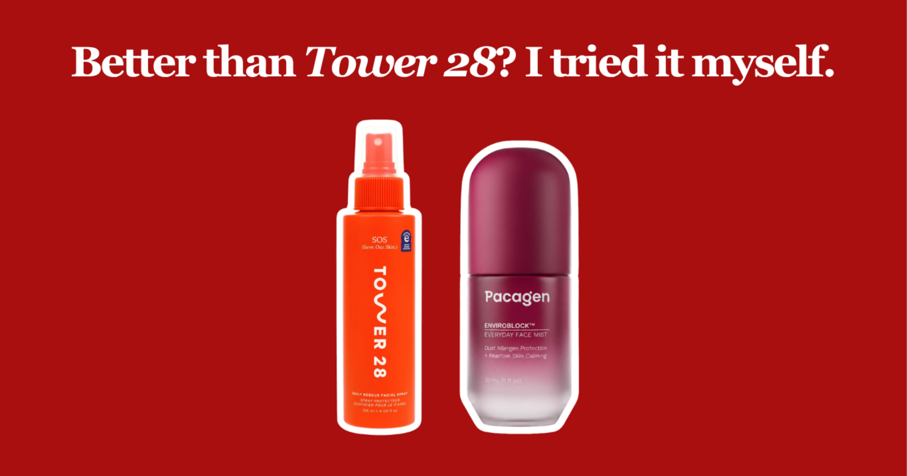
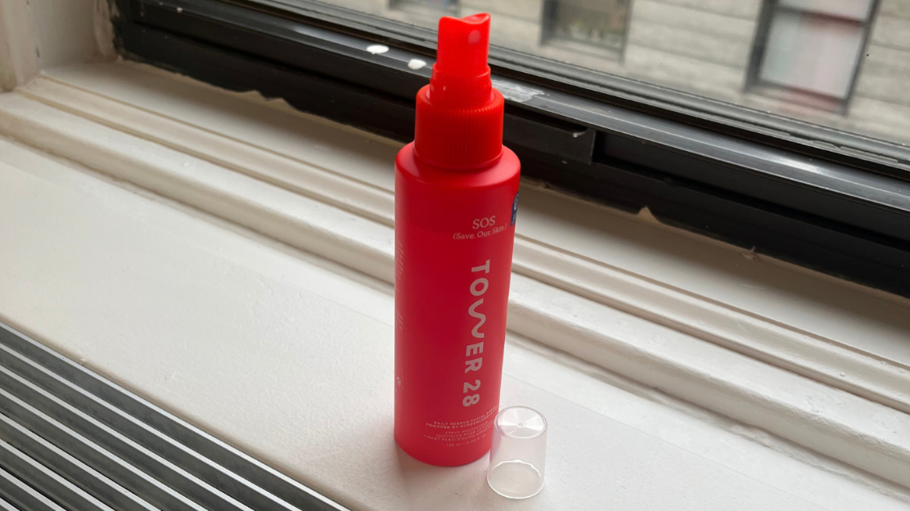
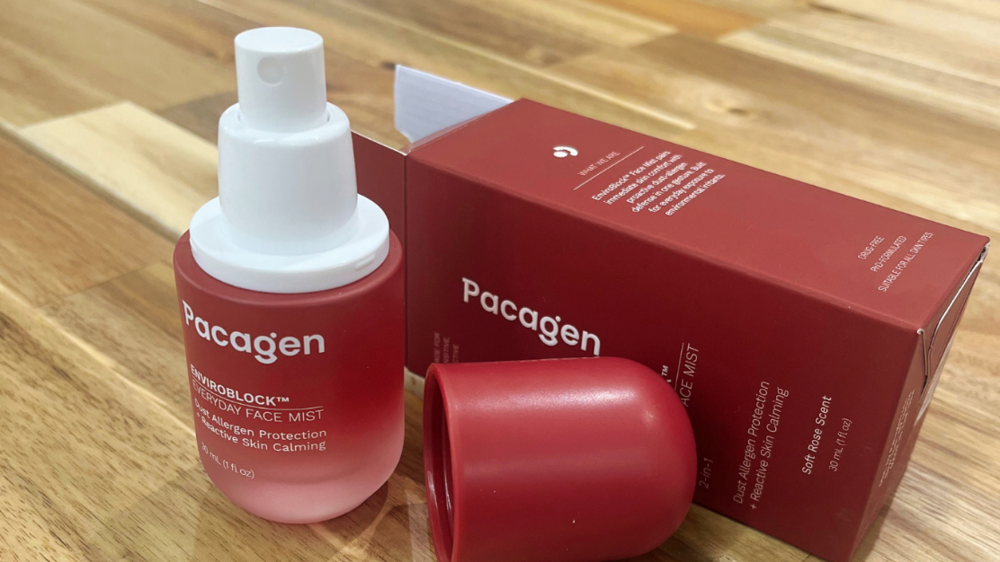

It seems like these days you can’t escape all the skincare gurus raving about hypochlorous acid for breakouts and acne. There’s Tower 28’s viral SOS Spray, Magic Molecule, and seemingly 500 other brands selling their own version.
So, I was intrigued when I came across Pacagen, a biotech company focused on solutions to environmental allergens. They recently launched a face mist that supposedly helps prevent breakouts… without any hypochlorous acid. Instead, their face mist uses a proprietary molecule they engineered called EnviroBlock™.
My curiosity got the best of me. What sort of ingredient could compete against hypochlorous acid? So I went down the rabbit hole to see how the science behind these two approaches stacks up.
I even tried both to compare their effects side by side.
My Breakout Concerns
Throughout my teens and well into my 20s, breakouts basically ran my life. A bad breakout could decide whether I wanted to go out that week, take photos, or be seen at all. Even now, there’s a very specific kind of dread that comes with waking up and feeling that tiny, tender bump under your skin.
So naturally, I tried nearly everything: prescription retinoids, hormonal treatments, even oral medications. I recently also picked up hypochlorous acid sprays to see what everyone was talking about.
Some helped. Some did nothing. And some just traded my breakouts for a different skin problem. But nothing ever felt like the answer.
The Benchmark: Hypochlorous Acid
To be fair, hypochlorous acid seems to work for many people. It’s actually a chemical that your own cells naturally produce to defend against microbes and bacteria. So when you concentrate it and add it to a facial spray, like Tower 28 did, you get a simple way to reduce bacteria on your skin and calm irritation.
For breakouts, the logic seems obvious: Less bacteria = fewer breakouts. Right? But it turns out, it’s not that simple…

What Actually Causes Acne?
Here’s what surprised me while doing my research: the bacteria associated with acne (appropriately named C. acnes) lives on pretty much everyone’s skin, despite not everyone struggling with acne. So simply having the bacteria on your skin isn’t enough to cause a breakout.
A breakout actually starts when skin cells inside a pore stop shedding normally and begin piling up, eventually forming a microscopic plug. Scientists call this abnormal process hypercornification. Add more accumulated oil and more debris, and voilà: you have the beginnings of a breakout.
So where does C. acnes come in? This bacteria can trigger inflammation in those same skin cells, which contributes to them undergoing hypercornification – and that’s what leads to acne. This is why using hypochlorous acid makes sense: less bacteria means less of one potential trigger for inflammation.
But here’s the kicker: these bacteria aren’t the only things capable of triggering those skin cells. Things we’re exposed to in our environment can do it too – perhaps to an even more extreme extent.
The Challenger: Pacagen’s EnviroBlock™
Now for the part you actually came here for: what makes Pacagen’s EnviroBlock™ Face Mist different?
Unlike hypochlorous acid, it doesn’t target bacteria at all. Instead, it targets Der p 1 – a major allergen produced by dust mites (which are literally everywhere). And Der p 1 isn’t just an allergen; it’s also a protease, meaning it acts like a microscopic pair of scissors that can cut proteins apart.
With enough exposure, Der p 1 can irritate and activate your skin cells, triggering chronic inflammation and potentially kicking off the same hypercornification process that starts a breakout. See where this is going?
So while hypochlorous acid targets one potential trigger (bacteria), EnviroBlock™ goes after particles that are impossible to avoid: microscopic allergens all throughout your environment.

The technology is designed to bind to dust mite allergens before they can interact with your skin, with Pacagen reporting nearly 80% neutralization of the targeted allergens.
Honestly, this wasn’t a factor I’d ever considered. I’d spent years obsessing over bacteria, oil, clogged pores, and everything I was putting on my face. I never thought about how much of an impact my bedroom and environment had on my skin.
FOR CONTEXT: the CDC estimates that each square yard of carpet can contain over 100,000 dust mites, while a typical used mattress can contain nearly 10 MILLION dust mites. This is the case for over 85% of all households in the US.
Tower 28’s SOS vs. Pacagen’s EnviroBlock™
The science sounded convincing enough. But ultimately, I cared about one thing: which one actually kept me from breaking out?
So I put both to the test. I tested both as a part of my normal routine, each for a couple weeks at a time.
Tower 28’s SOS Rescue Spray
How it works:
- Hypochlorous acid (HOCl) helps reduce bacteria on the skin and can calm irritation.
My experience
- Felt refreshing and calming, especially after a workout or when my skin’s sweaty
- Made sense as a go-to for bacteria-related breakouts
- But still had random breakouts seemingly out of nowhere, even when I’d done everything “right”
Great for sweaty days, but it didn’t cover every trigger.
Pacagen’s EnviroBlock™ Face Mist
How it works:
- Targets and neutralizes major dust allergens before they can interact with your skin.
My experience
- Didn’t expect much at first, but my skin started feeling more predictable over time
- Skin felt calmer and the little bumps I’d normally wake up to were less frequent
- Stopped thinking about my breakouts nearly as much as the weeks went by
Made my skin feel a lot more predictable, regardless of where I was.
The Verdict: What Helped Me More?
Going into this, I was pretty convinced hypochlorous acid would come out on top. But after testing both, my vote actually goes to Pacagen’s EnviroBlock™ Face Mist.
My main realization from this test is that “acne-causing” bacteria is only one piece of the puzzle. For my skin, addressing the inescapable dust particles floating around my apartment seemed to make a much bigger difference. And for that, EnviroBlock™ was clearly the way to go.
That being said, I don’t think hypochlorous acid is going anywhere. Tower 28’s spray did basically what I expected it to do. It’s cheaper, proven, and works well for many people. It earned a spot in my gym bag, and I’ll probably keep reaching for it whenever sweat and bacteria are my main concern. However, if I’m looking for something specifically to keep my skin consistently clear at home, I’d reach for Pacagen.